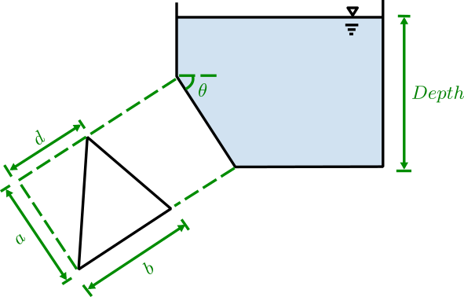
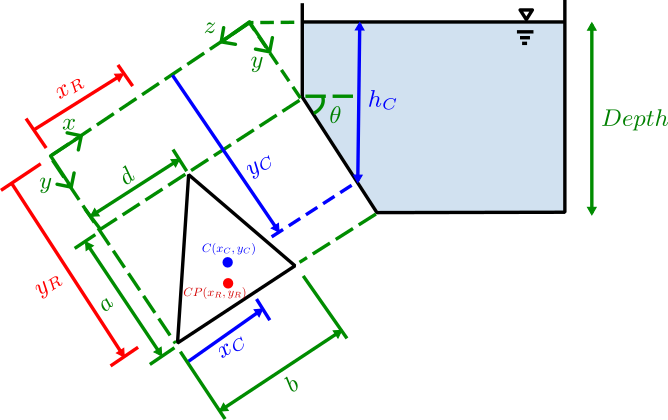

Problem Statement
Known
- An open tank is filled with an oil whose density is \( \rho \).
- There is a triangular panel on the inclined plane surface submerged in the oil.
Find
(a) The magnitude of the hydrostatic force acting on the triangular panel.
(b) Locate the point of action (i.e. center of pressure) of the hydrostatic force on the triangular panel.
Schematic

Reference figure supplied with the problem.
Known / Inputs
Analysis
Schematic

Annotated overview used for distances and angles on the inclined surface.
Triangular Panel (Normal View)
Centroid \(c\) is shown on the figure. Distances \(a/3\) (left) and \((b+d)/3\) (top) are indicated graphically.
(a) Magnitude of the hydrostatic force acting on the plane triangular panel.
\( \displaystyle y_{c} = \frac{D}{\sin\theta} - \frac{a}{3},\qquad h_{c} = y_{c}\,\sin\theta,\qquad A = \frac{ab}{2},\qquad F_R = \rho g\,h_{c}\,A. \)(b) Geometry relations (used for the center of pressure)
\( \displaystyle x_{c}=\frac{b+d}{3},\qquad I_{x_{c}}=\frac{b a^3}{36},\qquad I_{xy_{c}}=\frac{b a^2}{72}(b-2d). \)(c) Locate the point of action of the hydrostatic force at <xR, yR>.
\( \displaystyle x_R = x_{c} + \frac{I_{xy_{c}}}{y_{c} A},\qquad y_R = y_{c} + \frac{I_{x_{c}}}{y_{c} A}. \)Plots
Top row: \(F_R\) vs Depth, \((x_R-x_{c}),(y_R-y_{c})\) vs Depth. Middle row: \(F_R\) vs \(\theta\), \((x_R-x_{c}),(y_R-y_{c})\) vs \(\theta\). Bottom row: \(F_R\) vs \(d/b\), \((x_R-x_{c}),(y_R-y_{c})\) vs \(d/b\).